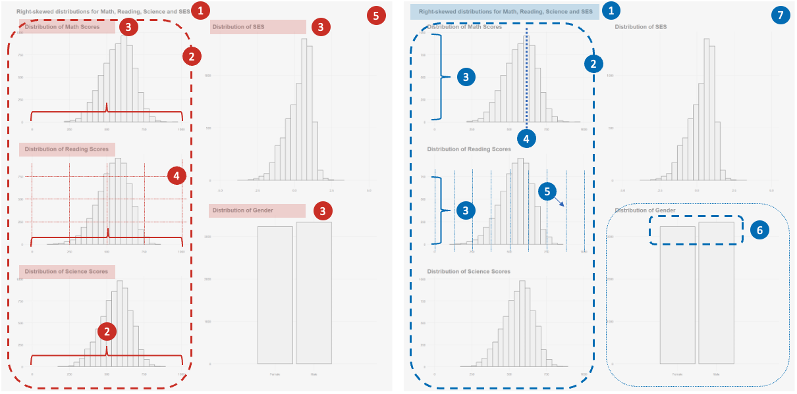

pacman::p_load(ggrepel, patchwork,
ggthemes, hrbrthemes,
ggdist, ggridges,
colorspace,ggstatsplot,
tidyverse) Take-home Exercise 2
Project Brief
This exercise aims to use data analysis methods to improve some of the visualizations produced for exercise 1. The original analysis could be found through this link
The complete project brief could be found here.
Data
The 2022 Programme for International Student Assessment (PISA) data, released on December 5, 2022, assesses global education systems by testing 15-year-olds in mathematics, reading, and science. The PISA 2022 database includes responses from students, schools, and parents across five data files, primarily in SAS and SPSS formats.
The dataset used for this exercise is a pre-engineered dataset followed the same instructions of data preperation given in the source.
Project Task
This take-home exercise covers
critic of the original submission in terms of clarity and aesthetics
sketch for the alternative design
remake of the original design using ggplot2, ggplot2 extensions and tidyverse packages.
Data Importing
Loading R packages
Importing filtered PISA data for SG students
The code chunk below uses read_rds() to import PISA SG data into R environment.
filtered_data <- read_rds("data/filtered_data.rds")Submission Critique
Overall Critique
The submission presents a thorough analysis, with commendable clarity and aesthetic consistency.
Strengths
Clarity
Extremely comprehensive introduction supported by external references, readings, and PISA report.
The selection of variables and the data preparation process are both logical and well-justified, which contributes to the persuasive and clear narrative of the report.
Flowcharts designed to be both visually appealing and informative, providing a clear understanding of the data structure employed.
The analytical approach is engaging, particularly the comparative examination of the top and bottom five schools.
Aesthetic
There is a commendable uniformity across the submission, with a consistent color theme, style, layout, and aspect ratio maintained throughout.
Titles and subtitles are well-crafted, and the labeling on the patched plot is especially effective in preventing misunderstandings.
Areas for Improvement
Clarity
A cross-subject comparison could offer additional insights into performance variations among different subjects. Although the analysis is conducted in parallel across subjects, presenting multiple charts under 1 subject simultaneously may hinder the audience’s ability to make intuitive comparisons and contrasts.
There are missed opportunities to highlight and draw attention to the key insights derived from the graphs.
Aesthetic
The chart aspect ratios are not fully optimized for computer screens, which could affect readability.
Some chart elements, such as color choices and transparency levels, result in an overlap of information that may be difficult to discern.
Plot 1 Evaluation
Original Design Intent

This plot serves as an introduction to the variables analyzed in the study, providing the reader with an overview of the sample size and distribution characteristics before delving into deeper analysis.
Critique
Note: Positive Aspects Highlighted in Red, Areas for Improvement Highlighted in Blue. Each point in the description could be refereed to the diagram below

Strengths
Clarity
p1: The title succinctly encapsulates the main takeaway of the plot, effectively pointing out the right-skewed distribution and offering a summary that orients the reader.
p2: The arrangement of three plausible value (PV) distributions across subjects in a vertical format allows for straightforward comparison of the histograms’ peaks and shapes along a consistent x-axis.
p3: Sub-title is clear and informative
Aesthetic
p4: grid line in lighter color, good hieghachy of information
p5: extremely consistent use of color, style, font size etc.
Areas for Improvement
Clarity
- p1: The title could be expanded to encapsulate all the information presented in the chart.
- p2: While histograms are useful for showing general distribution, boxplots might reveal additional details like outliers. This applies to ESCS histogram as well.
- p3: The inconsistent y-axis scale across different subjects could lead to misinterpretation when comparing population sizes across grades.
- p4: The distribution of PVs lacks guideline indicators such as mean or median values, which could enhance interpretability.
- p6: The similar height of the gender distribution bars could be more informative if annotated with exact numbers.
Aesthetic
p1: A central title with a larger font could improve the visual hierarchy.
p5: The base of the x-axis should feature a slightly darker color to ground the distribution.
p7: The chart’s aspect ratio is not well-suited for computer screens, leading to potential display issues and readability challenges.
Sketch
improvements based on the above 9 points mentioned earlier:
p1: Main title should be centered to better balance the visual layout. Additionally, the title has been broadened to encompass all the information presented in the diagram, ensuring a more holistic representation.
p2: Boxplots should be added to each distribution to reveal more in-depth information. This is particularly effective in identifying and presenting outliers, providing a clearer understanding of data variances.
p3: The scales for all 3 y-axes corresponding to different subjects should be adjusted for alignment. This ensures a consistent and fair comparison across subjects.
p4: Add guidelines highlight the mean scores across students, offering a quick reference to these central data points, aiding in immediate comprehension of average performances.
p5: The inclusion of minor gridlines at 100-unit intervals to provide a more detailed and precise scale for measurement, enhancing the plot’s usability.
p6: Labels indicating the number of samples in each gender category to offer immediate quantitative understanding of gender distribution within the sample.
p7: Switch layout to a landscape orientation, catering to computer screen dimensions to improve readability and overall user experience when interacting with the data on digital platforms.
Make Over
Show the code
math <- ggplot(data=filtered_data,
aes(x = MATH)) +
geom_histogram(bins=20,
boundary = 100,
color="grey25",
fill="grey90",
linewidth=0.3) +
geom_boxplot(width = 50,
fill = "white",
color = "black",
outlier.colour = "#c73824",
outlier.fill = "#c73824",
outlier.size = 1,
outlier.alpha = 0.2) +
coord_cartesian(xlim=c(0,1000), ylim=c(0,1000)) +
ggtitle("Distribution of Math Scores") +
geom_vline(data = filtered_data %>%
summarize(mean_score = mean(MATH), median_score = median(MATH)),
aes(xintercept = mean_score), color = "#c73824", linetype = "dashed") +
geom_text(data = filtered_data %>%
summarize(mean_score = mean(MATH), median_score = median(MATH)),
aes(x = mean_score - 100, y = Inf, label = paste("Mean:", round(mean_score, 2))), color = "#c73824", vjust = 1, size = 3) +
scale_x_continuous(breaks=seq(0, 1000, by=200),
minor_breaks=seq(0, 1000, by=100))
read <- ggplot(data=filtered_data,
aes(x = READ)) +
geom_histogram(bins=20,
boundary = 100,
color="grey25",
fill="grey90",
linewidth=0.3) +
geom_boxplot(width = 50,
fill = "white",
color = "black",
outlier.colour = "#c73824",
outlier.fill = "#c73824",
outlier.size = 1,
outlier.alpha = 0.2) +
coord_cartesian(xlim=c(0,1000), ylim=c(0,1000)) +
ggtitle("Distribution of Reading Scores") +
geom_vline(data = filtered_data %>%
summarize(mean_score = mean(READ), median_score = median(READ)),
aes(xintercept = mean_score), color = "#c73824", linetype = "dashed") +
geom_text(data = filtered_data %>%
summarize(mean_score = mean(READ), median_score = median(READ)),
aes(x = mean_score - 100, y = Inf, label = paste("Mean:", round(mean_score, 2))), color = "#c73824", vjust = 1, size = 3) +
scale_x_continuous(breaks=seq(0, 1000, by=200),
minor_breaks=seq(0, 1000, by=100)) +
theme(plot.title = element_text(size = 12))
sci <- ggplot(data=filtered_data,
aes(x = SCIENCE)) +
geom_histogram(bins=20,
boundary = 100,
color="grey25",
fill="grey90",
linewidth=0.3) +
geom_boxplot(width = 50,
fill = "white",
color = "black",
outlier.colour = "#c73824",
outlier.fill = "#c73824",
outlier.size = 1,
outlier.alpha = 0.2) +
coord_cartesian(xlim=c(0,1000), ylim=c(0,1000)) +
ggtitle("Distribution of Science Scores") +
geom_vline(data = filtered_data %>%
summarize(mean_score = mean(SCIENCE), median_score = median(SCIENCE)),
aes(xintercept = mean_score), color = "#c73824", linetype = "dashed") +
geom_text(data = filtered_data %>%
summarize(mean_score = mean(SCIENCE), median_score = median(SCIENCE)),
aes(x = mean_score - 100, y = Inf, label = paste("Mean:", round(mean_score, 2))), color = "#c73824", vjust = 1, size = 3) +
scale_x_continuous(breaks=seq(0, 1000, by=200),
minor_breaks=seq(0, 1000, by=100))
ses <- ggplot(data=filtered_data,
aes(x = SES)) +
geom_histogram(bins=20,
boundary = 100,
color="grey25",
fill="grey90",
linewidth = 0.3) +
geom_boxplot(width = 50,
fill = "white",
color = "black",
outlier.colour = "#c73824",
outlier.fill = "#c73824",
outlier.size = 1,
outlier.alpha = 0.2) +
coord_cartesian(xlim=c(-5,5), ylim = c(0,1500)) +
ggtitle("Distribution of SES") +
geom_vline(data = filtered_data %>%
summarize(mean_score = mean(SES), median_score = median(SES)),
aes(xintercept = mean_score), color = "#c73824", linetype = "dashed") +
geom_text(data = filtered_data %>%
summarize(mean_score = mean(SES), median_score = median(SES)),
aes(x = mean_score - 1, y = Inf, label = paste("Mean:", round(mean_score, 2))), color = "#c73824", vjust = 1, size = 3)
gender <- ggplot(data=filtered_data,
aes(x = GENDER)) +
geom_bar(color="grey25", fill="grey90", linewidth =0.2) +
geom_text(stat = 'count', aes(label = after_stat(count)), vjust = -0.3) +
coord_cartesian(xlim=c(0,3), ylim =c(0,4000)) +
ggtitle("Distribution of Gender")
patchwork <- ( math / read/ sci) | (ses / gender)
patchwork <- patchwork +
plot_annotation(
title = "Distributions Across Subjects Preformance, Socialeconomic Status and Gender",
theme = theme(plot.title = element_text(size = 50))
)
patchwork & theme_fivethirtyeight(base_size = 7) +
theme(
panel.grid.minor.x = element_line(linewidth = 0.2, linetype = 'solid', colour = "grey85"),
plot.title = element_text(face = "bold", hjust = 0.5)
)Plot 2 Evaluation
Original Design Intent
This plot synthesizes a comprehensive analysis of Singaporean students’ performance in mathematics, taking into account various factors including school, gender, and socioeconomic status. Given that the same layout is applied to the other two subjects, this evaluation will concentrate on mathematics performance as a representative example.
Critique - Overall
Note: Positive Aspects Highlighted in Red, Areas for Improvement Highlighted in Blue. Each point in the description could be refereed to the diagram below
Strengths
Clarity
p1: The title succinctly encapsulates the main takeaway of the plot
p2: Sub-title is clear and informative
p3: Interesting to include OECD mean value as a benchmark introduces a comparative dimension to the analysis, enriching the narrative around Singapore’s performance.
Aesthetic
- p4: grid line in lighter color, good hierarchy of information, extremely consistent use of color, style, font size etc.
Areas for Improvement
Clarity
- p1: The repeated presentation of histograms may lead to redundant information if they do not offer new insights beyond previous charts.
- p2: While the plot compares performance across gender, socioeconomic status, and schools for each subject, it misses the opportunity to analyze these factors in parallel across different subjects, which could provide a more holistic understanding.
Aesthetic
- p1: The current proportions of the histogram are too narrow, making it challenging to view all data on one screen and hindering readability.
To enhance the analytical narrative and provide a clearer comparative perspective, it would be advantageous to reorganize the data presentation structure for a more focused analysis on each thematic factor, facilitating a deeper understanding of how each influences performance across different academic disciplines. Such an approach could reveal more nuanced insights and trends that might be obscured in the current subject-by-subject layout
Critique - School
Note: Positive Aspects Highlighted in Red, Areas for Improvement Highlighted in Blue. Each point in the description could be refereed to the diagram below
Strengths
Clarity
p1: The use of density plots is an effective choice for illustrating the relationship between schools, with a smart focus on comparing only the top and bottom 5 schools for clarity.
p2: The inclusion of mean value lines provides a clear reference point, offering an informative range indication.
Aesthetic
- p3: The application of a color gradient effectively differentiates scoring ranges, aiding in visual interpretation.
- p4: grid line in lighter color, good hierarchy of information, extremely consistent use of color, style, font size etc.
Areas for Improvement
Clarity
- p1: The title is too general and fails to convey critical insights or specific focus of the analysis.
- p2: The chart is limited to presenting data for a single subject, which restricts broader comparative analysis.
- p3: Guideline annotations lack labels
- p4: The use of quantiles for each school may not be necessary in this context. Given the varying performance and sample sizes across schools, a general trend might suffice to convey the intended message.
- p5: The absence of y-axis labels detracts from the interpretability of the data.
- p6: Inconsistent x-axis scales across different subjects can introduce bias in parallel comparisons.
Aesthetic
- p7: The color scheme might not be distinct enough to differentiate clearly between the lower and upper 5 schools, potentially hindering quick visual differentiation.
Sketch
improvements based on the above points mentioned earlier:
p1: Main title should be centered to better balance the visual layout. Additionally, the title should use to highlight key information in the chart
p2: Combining grades from different subjects for the top and bottom 5 schools into a single chart could be more effective. Since the focus is on the distribution patterns rather than specific school identities, this approach will facilitate a clearer comparative analysis.
p3: Enhance clarity by adding informative annotations along the mean line.
p4: The quantile lines, deemed unnecessary for this context, have been removed to simplify the visual presentation and focus on the most relevant data trends.
p5: The y-axis has been clearly labeled, ensuring that viewers can easily interpret the data and understand the variables being analyzed.
p6: The x-axis has been standardized across different subjects to maintain consistency and avoid any potential bias in comparative analysis.
p7: Different shades or colors will be used to represent different subjects, enabling a more intuitive distinction between them and enhancing the overall readability of the chart.
Make Over
Show the code
# create dataframe to store school ranking information
top_bottom_schools_df <- data.frame(
SchoolID = character(),
Subject_Rank = integer(),
MeanScore = numeric(),
stringsAsFactors = FALSE
)
subjects <- c("MATH", "READ", "SCIENCE")
for (subject in subjects) {
school_means <- filtered_data %>%
group_by(SCHOOLID) %>%
summarize(MeanScore = mean(get(subject), na.rm = TRUE), .groups = 'drop')
school_means <- school_means %>%
arrange(desc(MeanScore)) %>%
mutate(Subject_Rank = rank(desc(MeanScore)))
top_bottom <- school_means %>%
filter(Subject_Rank <= 5 | Subject_Rank >= (n() - 4))
top_bottom$Subject <- subject
top_bottom_schools_df <- bind_rows(top_bottom_schools_df, top_bottom)
}
top_bottom_schools_wide <- top_bottom_schools_df %>%
select(-MeanScore) %>%
pivot_wider(names_from = Subject, values_from = Subject_Rank)
colnames(top_bottom_schools_wide) <- gsub("(.*)_Rank", "\\1", colnames(top_bottom_schools_wide))
top_bottom_schools_wide <- top_bottom_schools_wide %>%
rename(
MATH_rank = MATH,
READ_rank = READ,
SCIENCE_rank = SCIENCE
)
# join the dataframe
df <- inner_join(filtered_data, top_bottom_schools_wide, by = "SCHOOLID")
df <- df %>%
mutate_at(vars(SCIENCE_rank,READ_rank,MATH_rank), as.factor)
# Create the ggplot
ggplot(df %>% filter(!is.na(SCIENCE_rank)), aes(x = SCIENCE, y = SCIENCE_rank)) +
stat_density_ridges(
aes(fill = "Science"),
calc_ecdf = TRUE,
color = "black",
alpha = 0,
linetype = "solid",
scale = 0.8,
linewidth = 0.5
) +
stat_density_ridges(
data = df %>% filter(!is.na(MATH_rank)),
aes(x = MATH, y = MATH_rank, fill = "Math"),
calc_ecdf = TRUE,
fill = "grey20",
linewidth = 0,
alpha = 0.3,
scale = 0.8
) +
stat_density_ridges(
data = df %>% filter(!is.na(READ_rank)),
aes(x = READ, y = READ_rank, fill = "Reading"),
calc_ecdf = TRUE,
color = "red",
alpha = 0,
linetype = "dotted",
scale = 0.8,
linewidth = 0.7
) +
labs(y = "School ID", x = "Scores") +
scale_x_continuous(breaks = seq(0, 1000, 100)) +
ylab("School ID") +
ggtitle("Science, Math, and Reading Scores between Top and Bottom 5 Schools") +
theme_fivethirtyeight() +
theme(plot.title = element_text(hjust = 0.5)) +
theme(legend.position = "none") Alternatively, another approach is to analyze the school in a broader context by examining the distribution of school scores across all subjects among the surveyed schools, rather than focusing solely on the performance of students from a specific school.
improvements based on the above points mentioned earlier:
p1: Rather than comparing between schools, the analysis will focus on comparing performance across subjects based on school performance.
p2: For each subject, visual representations such as density plots, box plots, and dotted plots will be used to illustrate the distribution of school performance.
p3: The analysis will highlight the top and bottom 3 scorers in each subject to provide additional context
Show the code
school_means <- filtered_data %>%
group_by(SCHOOLID) %>%
summarize(MeanMathScore = mean(MATH, na.rm = TRUE),
MeanReadScore = mean(READ, na.rm = TRUE),
MeanSciScore = mean(SCIENCE, na.rm = TRUE),
.groups = 'drop'
)
top_bottom_schools <- school_means %>%
mutate(TopMath = rank(-MeanMathScore) <= 3,
BottomMath = rank(MeanMathScore) <= 3,
TopRead = rank(-MeanReadScore) <= 3,
BottomRead = rank(MeanReadScore) <= 3,
TopSci = rank(-MeanSciScore) <= 3,
BottomSci = rank(MeanSciScore) <= 3)
long_school_means <- top_bottom_schools %>%
gather(key = "Subject", value = "Score", MeanMathScore, MeanReadScore, MeanSciScore)
highlighted_schools <- long_school_means %>%
mutate(Highlight = ifelse((Subject == "MeanMathScore" & (TopMath | BottomMath)) |
(Subject == "MeanReadScore" & (TopRead | BottomRead)) |
(Subject == "MeanSciScore" & (TopSci | BottomSci)),
"Highlighted", "Normal")) %>%
filter(Highlight == "Highlighted")
mean_math <- mean(filtered_data$MATH, na.rm = TRUE)
mean_read <- mean(filtered_data$READ, na.rm = TRUE)
mean_sci <- mean(filtered_data$SCIENCE, na.rm = TRUE)
ggplot(long_school_means, aes(x = Score, y = Subject)) +
stat_halfeye(adjust = 0.5,
justification = -0.2,
.width = 0,
point_colour = NA,
height = 0.4) +
geom_boxplot(width = .15, outlier.shape = NA) +
stat_dots(side = "left",
justification = 1.1,
binwidth = 3,
dotsize = 1.1,
alpha = 0.4,
fill = "#0477bf",
color = "#0477bf") +
geom_point(data = highlighted_schools, aes(x = Score, y = Subject),
size = 1.3, alpha = 0.8, color = "red",
position = position_nudge(y = -0.11)) +
geom_segment(aes(x = mean_math, xend = mean_math, y = 0.8, yend = 1.2), color = "#c73824", linetype = "dashed") +
geom_text(aes(x = mean_math, y = 1.5, label = paste("National Math Mean:", round(mean_math, 2))),
color = "#c73824", vjust = 4, size = 3) +
geom_segment(aes(x = mean_read, xend = mean_read, y = 1.8, yend = 2.2), color = "#c73824", linetype = "dashed") +
geom_text(aes(x = mean_read, y = 1.5, label = paste("National Reading Mean:", round(mean_read, 2))),
color = "#c73824", vjust = - 13, size = 3) +
geom_segment(aes(x = mean_sci, xend = mean_sci, y = 2.8, yend = 3.2), color = "#c73824", linetype = "dashed") +
geom_text(aes(x = mean_sci, y = 1.5, label = paste("National Science Mean:", round(mean_sci, 2))),
color = "#c73824", vjust = -30, size = 3) +
theme_fivethirtyeight() +
theme(legend.position = "none",
panel.grid.major.x = element_line(color = "grey80", size = 0.3),
panel.grid.minor.x = element_line(color = "grey80", size = 0.2),
axis.text.x = element_text(hjust = 0.5),
plot.title = element_text(size = 15, hjust = 0.5)) +
labs(title = "Performance Disparity Across Subjects in Singapore's Schools") +
scale_x_continuous(breaks = seq(0, 1000, by = 100),
minor_breaks = seq(0, 1000, by = 50)) +
scale_y_discrete(labels = c('Maths','Reading', 'Science')) Critique - Gender
Note: Positive Aspects Highlighted in Red, Areas for Improvement Highlighted in Blue. Each point in the description could be refereed to the diagram below
Strengths
Clarity
p1: Good choice of density plot for understanding the distribution of data.
p2: Additional boxplot adds depth to reveal the relationships between variables.
p3: Inclusion of guidelines (e.g., mean) provides additional information for interpreting and comparing across subjects.
Aesthetic
- p4: Effective use of lighter-colored gridlines, maintaining a clear hierarchy of information, and consistent application of color, style, font size, etc.
Areas for Improvement
Clarity
- p1: The title is overly broad and fails to convey the specific focus or key findings of the analysis.
- p2: Explore opportunities to better understand the relationship between gender and different subjects.
- p3: Provide labels for the guidelines to enhance clarity.
- p4: Absence of outliers for completeness.
Aesthetic
- p5: Distinguish between male and female data points by using different colors to improve visual differentiation.
Sketch
improvements based on the above points mentioned earlier:
p1: Main title should be centered to better balance the visual layout. Additionally, the title use to highlight key information in the chart
p2: Combine different subjects into one chart, sharing the same y-axis to reveal the distribution among different subjects simultaneously.
p3: Add additional points or labels to highlight the mean value for better clarity.
p4: Address the issue of outliers in the chart.
p5: Use different colors to differentiate between male and female data points for better visual distinction.
Make Over
Show the code
math_gender <- ggplot(data= filtered_data,
aes(x= GENDER, y= MATH, color = GENDER)) +
geom_violin(aes(fill = GENDER), size = 0.6, alpha = 0.3, linewidth = 0) +
geom_boxplot(width= 0.4, outlier.colour = "grey20", outlier.size = 1,
outlier.alpha = 0.3) +
stat_summary(geom = "point",
fun.y="mean",
colour ="black",
size=2) +
coord_cartesian(ylim = c(0,1000)) +
scale_color_manual(values=c("#c73824", "#0477bf")) +
theme_fivethirtyeight() +
labs(title="Mathematics") +
scale_y_continuous(breaks = seq(0, 1000, by = 200)) +
theme(axis.title.x = element_blank(),
axis.title.y = element_blank(),
plot.title=element_text(size= 12, hjust= 0.5),
axis.text = element_text(size= 10),
legend.position = "none")
read_gender <- ggplot(data= filtered_data,
aes(x= GENDER, y= READ, color = GENDER)) +
geom_violin(aes(fill = GENDER), size = 0.6, alpha = 0.3, linewidth = 0) +
geom_boxplot(width= 0.4, outlier.colour = "grey20", outlier.size = 1,
outlier.alpha = 0.3) +
stat_summary(geom = "point",
fun.y="mean",
colour ="black",
size=2) +
coord_cartesian(ylim = c(0,1000)) +
scale_color_manual(values=c("#c73824", "#0477bf")) +
theme_fivethirtyeight() +
labs(title="Reading") +
scale_y_continuous(breaks = seq(0, 1000, by = 200)) +
theme(axis.title.x = element_blank(),
axis.title.y = element_blank(),
axis.text.y = element_blank(),
plot.title=element_text(size= 12, hjust= 0.5),
axis.text = element_text(size= 10),
legend.position = "none")
sci_gender <- ggplot(data= filtered_data,
aes(x= GENDER, y= SCIENCE, color = GENDER)) +
geom_violin(aes(fill = GENDER), size = 0.6, alpha = 0.3, linewidth = 0) +
geom_boxplot(width= 0.4, outlier.colour = "grey20", outlier.size = 1,
outlier.alpha = 0.3) +
stat_summary(geom = "point",
fun.y="mean",
colour ="black",
size=2) +
coord_cartesian(ylim = c(0,1000)) +
scale_color_manual(values=c("#c73824", "#0477bf")) +
theme_fivethirtyeight() +
labs(title="Science") +
scale_y_continuous(breaks = seq(0, 1000, by = 200)) +
theme(axis.title.x = element_blank(),
axis.title.y = element_blank(),
axis.text.y = element_blank(),
plot.title=element_text(size= 12, hjust= 0.5),
axis.text = element_text(size= 10),
legend.position = "none")
p2 <- (math_gender + read_gender + sci_gender) +
plot_annotation(title= "Performance by Gender Across Subjects",
theme = theme_fivethirtyeight() +
theme(plot.title = element_text(size = 15, hjust = 0.5)
)
)
p2